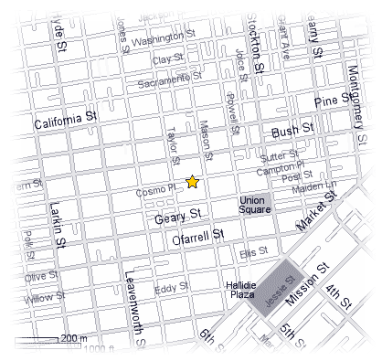
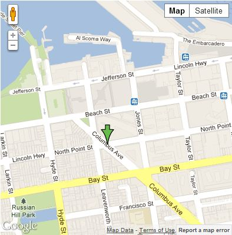

San Francisco Hotels
San Francisco has many great locations to stay while you are visit, with options for those looking for luxury to those just looking to stay within a modest budget.
In the past I have stayed in five different locations while visiting the city. Many of them were repeat visits as they offered great rates, comfortable rooms, and convenient locations. There are others that I wish to visit as well and will provide my reviews on the location during and after the visit. The two that will be featured to start with will be the Hotel Beresford and the Holiday Inn on Columbus Avenue.
Hotel Beresford
The first location has been the place I have visited most often. The Hotel Beresford has great rates and I have always gotten a room for just under 100 dollars a night. The rooms have been clean, comfortable, and the staff always friendly and helpful.
Transportation
The hotel is just a few blocks from Union Square and the start of the Cable Car line that will take you to Fisherman's Wharf. I would recommend taking the street cars on Market to the wharf however as the lines for the cable cars are usually long. If you wish to ride the cable cars do so first thing in the morning. You can usually ride back and forth three times before lines start to form. In regards to parking, they charge a daily fee and the car is valet parked, so you just pull up to the hotel on Sutter street and they take care of you. You are allowed to come and go as many times a day as you wish all for the same cost. However being so close to Union Square and the BART line I would just take the BART from SFO and save on car rental, gas, and parking fees. You can rent a car from within the city if you plan on making a trip outside of the city one day during your visit.
Internet abilities
The Hotel offers free wireless, however it is only available in the lobby area, so that is a downside, but nothing that can not be dealt with.
Holiday Inn - Columbus Avenue
The Holiday Inn on Columbus Avenue is great for the location, and offers comfortable rooms at reasonable rates for the Wharf area. The parking rate is high, however if you forgo renting a car for the majority of your visit to San Francisco you can save quite a bit over a week stay. I would recommend taking a cab from SFO to the hotel rather than trying to take the BART into the city. The rooms at the Holiday Inn are large and comfortable and offer a work desk.
Transportation
The hotel is just a few blocks from the North end of Fisherman's Wharf and right on Columbus Ave. There is a bus stop just a block away, taxis come and go constantly at the hotel, just a few blocks away you will also find the starting point of the street cars that run along the Embarcadero which will take you to Market Street and Union Square. The start of two Cable car lines are also just a few blocks away, as well as a Budget Car rental location. Parking cost $40.00 a day plus tax if you decide to rent a car for your visit. For this reason alone I generally do not rent a car except for one day. With a Budget car rental place just a five minute walk it is easy to set this up and then use your car to travel over the Golden Gate Bridge to visit Muir Woods and other scenic locations.
Internet abilities
The hotel offers "high" speed Internet in all the rooms via wireless connection. You can also get Internet access in common areas, the lobby and in meeting rooms. The Internet speed is about what you would expect from any hotel, I only tended to get about 1 MB down at best. So while technically high speed it will not be anything like your home Internet speeds. Don't expect to be watching Netflix on your laptop.
Overall
Overall both hotels have there ups and downs. If you have a larger group and will have three or four people staying in the room I would go with the Holiday Inn as you will have more room. The rooms at the Beresford are smaller, yet still functional. The hotel is also older, but still nice to stay in. The Beresford has a great lead in the fact that you can stay in San Francisco in walking distance to many great locations for less than $100.00 per night, and even with parking it is just a little over $100.00 per night. The Holiday Inn with parking you will be looking at closer to $200.00 per night or even more depending on the room size and type you reserve.
Comparison Chart |
||
|---|---|---|
Beresford Inn |
Holiday Inn |
|
Cost per night: |
$89.00 |
$130.00 |
Parking fee: |
$27.00 |
$40.00 |
Nearby: |
Union Square |
Fisherman's Wharf |
Wi-Fi: |
Lobby Only |
In Room |